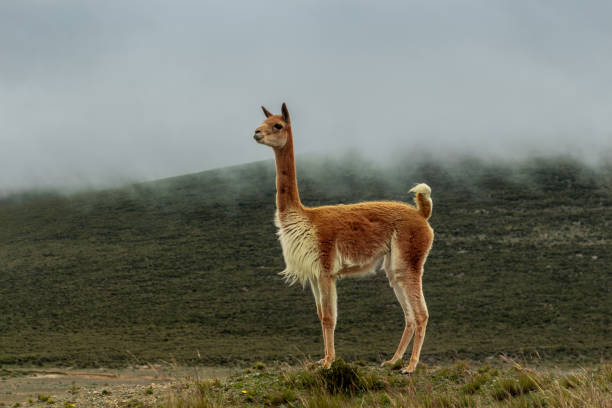

Detroit Dukes
Dukes is the Mascot of FootBall Team.This Mascot resebles a animal called Vicuna.
It's colour is Brown White. It is considered as a resemblance of victory.
Fun Facts
Vicunas have some of the softest wool in the entire animal kingdom
Most Distinctive feature is its Long Neck
Number of species is one that is unique

Go to Previous Page